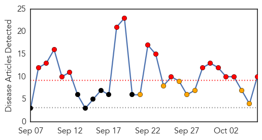

30 Day Trends
Web: 16 alerts, 7 warnings
Twitter: 1 alerts, 0 warnings
Top Articles:
- 0.997
- Total number of enterovirus D68 cases at GRH now at eight
- 0.994
- In-depth analysis of bat influenza viruses concludes they pose low risk to humans
- 0.988
- Health Officials urge everyone to get vaccinated for the Flu
- 0.982
- Enterovirus D68: Explaining Hamilton's 139 cases
- 0.953
- Drive-thru flu vaccine clinic coming to Old Town Saginaw
- 0.869
- Shots advised as peak flu season looms
- 0.752
- 'Virological penicillin': Plant MIR2911 directly targets influenza A viruses
- 0.709
- Registered Nurses first Regulator to Issue Position Statement on Mandatory Influenza Immunization -- EDMONTON, Oct. 6, 2014
- 0.559
- Enterovirus D-68 update: Second Hamilton preschooler awaits CDC results as officials try to quell fears
- 0.505
- When should you choose the ER over walk-in care?
Top Tweets:
-
No tweets found for Oct 06, 2014
Web/News Articles
Tweets

Article Locations